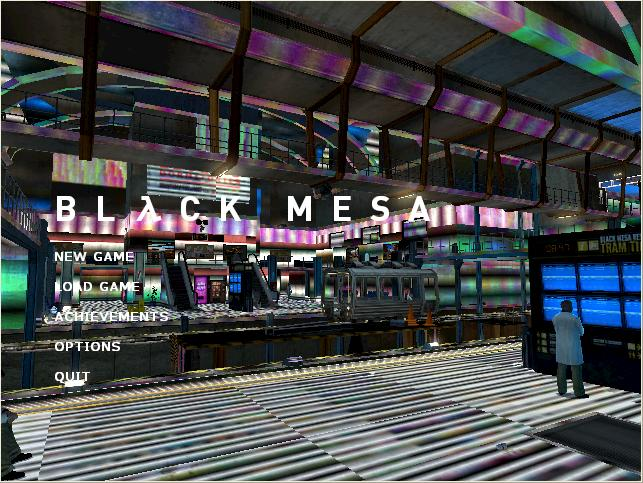

Hi, I need help!! All te textures of my black mesa is colored!!
What can a do to fix it?

Have you changed your video options? What are they set at? Does your computer meet the system requirements?
It reminds me of videos showing HL2 with the lowest settings possible (through console).
Try deleting your config files, or putting
-dxlevel 90
in starting parameters on steam.
This is most likely due to directx level
Right click Black Mesa, click properties, click Set Launch Options put in:
-dxlevel 9.0
Or try
-dxlevel 8.1
HL2 EP 2 works fine! but black mesa…
a changed all the video options, but its not working…
I’m using:
res :640x480
model detail: high
texture: medium
shader: high
water detail: reflect world
shadow: medium
color correction: disabled
the other options, everithings OFF
I tried, and it’s worse!
haha, well that was unexpected…
I had a similar problem with Counter Strike Source… Multi coloured textures etc… Dxlevel fixed it for me. :meh:
haha, and now I don’t know how to make it return to normal, haha
remove -dxlevel ** from you set launch options
Which dxlevel option did you use?
I tried 90 and 81 …
*I’m using win XP, because the FPS its much better on the notebook
I tried with win 7 and the game its fine, but too slow and I want to play the
game on Win XP.
=/
I had this problem it was solved by doing the the above fix, also. Make sure your graphics control center you use application settings, and not graphics card settings. I probably wont be back to this forum so, if you dont know what Im talking about google it or CCC it can be found in gaming, 3d application settings, then in the anti alaising mode set it to “use application settings”
Try to:
-set a bit higher resolution
-textures to high
-shader to medium
-shadow to low
-enable color correction
-turn on HDR
With your tips my game works fine now ! Thanks buddies !